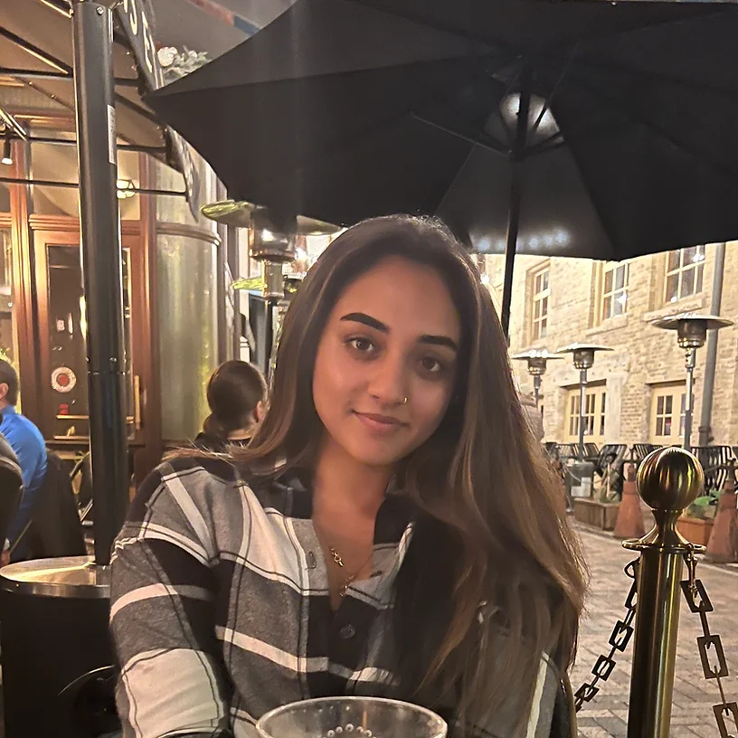

Resume
Misha Patel
Biomedical Science

Work Experience
- Digital Strategist
Beast Creative Agency
| 02/2023 - Present
Managing and training the digital marketers and other marketing positions, researching products and services, analyzing web traffic metrics, monitoring SEO/ SEM; building strong client relationships, liaising with marketing, sales, and content teams to ensure brand consistency, identifying advertising needs; suggesting new campaigns, optimizing the customer experience and monitoring constantly the competitors and suggesting improvement statistics.
- Category Specialist - Contract
GoPuff
| 10/2022 - 04/2023
Established a deep understanding of GoPuff’s business, internal processes, and overall assortment. Conduct pricing analysis both nationally and locally to ensure key product lines are represented effectively in all markets and margin targets are met. Partnered with Supply Chain and Planning departments to maximize revenue and financial targets within the respective product classifications.
- Lead - Web Design/Developer Intern
MobiWorld Development Inc
| 11/2022 - 03/2023
Produced HTML & CSS for responsive web design in compliance with company standards and protocols. Produced and managed web content for new products and ongoing projects. Worked with team to create new features on existing products using an agile development process.
- Lead - Digital Marketing Specialist Intern
MobiWorld Development Inc
| 07/2022 - 10/2022
Contribute to and implement the digital marketing plan that supports company objectives. Use various platforms (i.e., direct outreach, SEO, social media, forums, events, etc.) to grow a unique community of learners, educators, and creators. Research ways to attract more followers/fans, increase fan engagement, and the latest trends and developments in social media and digital marketing. Use Google Analytics and competitive intelligence tools to drive traffic, increase conversion rates and make strategic and tactical recommendations. Generated content calendar and developed marketing strategies for social media channels through the company's content management system. Assisted with social media plans/schedules and running campaigns, tracking analytics, and creating reports. Performed weekly meetings to review reports.
- Hospital Corpsman - Dental Tech
US Navy Reserve
| 02/2020 - Present
Managed teams of 3-20 in timely and successful patient care in high pressure training exercises. Lead 50 operational billet commands and ensure administrative medical and training readiness. Manage efficiency of the medical clinic during drill weekend to ensure junior enlisted sailors are trained and assigned properly to maintain operations.